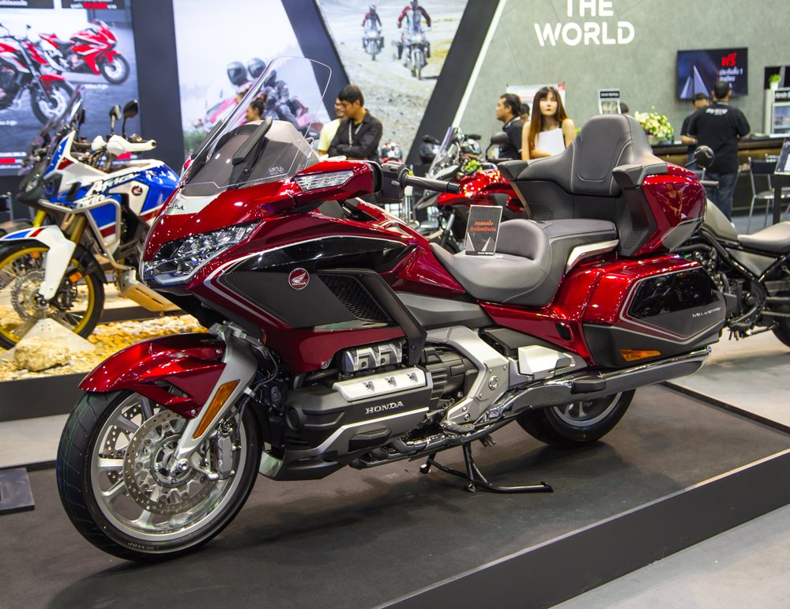

Tipos de motos: Conheça as variações que existem
Os apaixonados por duas rodas têm motivos para nunca enjoar. São muitos os tipos de motos e modelos disponíveis no mercado.
São mais de vinte categorias e, apesar de nem todas emplacarem – literalmente – no Brasil, ainda assim há uma grande variedade no País.
A seguir, listamos por ordem alfabética os nove tipos de motos mais populares.
1. Big Trail

Pensadas para quem gosta de estrada, seja de asfalto ou de terra. As Big Trail são motos grandes que oferecem tecnologia e velocidade para trechos longos, com diferenciais que variam de acordo com o gosto do piloto. São, portanto, usadas até mesmo em competições de motocross. Vale lembrar que as usadas para fins esportivos, tem muitas adaptações.
2. Custom
Assim como as Big Trail, as Custom também agradam ao público estradeiro. Esta categoria, porém, é focada no viajante que prioriza o conforto no asfalto: as pedaleiras são avançadas, o banco é baixo e a posição de pilotagem levemente inclinada para trás.
Sendo assim, para a garupa é um dos tipos de motos mais confortáveis, pois geralmente integra um encosto para que o passageiro também se sinta confortável em longas distâncias.
3. Esportivas
A palavra que melhor define a categoria das Esportivas é desempenho. Com design aerodinâmico e extrema potência, tais máquinas são inspiradas nos modelos de corrida e até usadas para campeonatos como o Superbike.
Aqui a posição de pilotagem é mais agressiva e adiantada ao guidão. Dessa forma, o piloto vai praticamente “deitado” no tanque de combustível para favorecer a aerodinâmica.
Assim, já é de se imaginar que para o acompanhante não é muito confortável, né?
4. Naked

De média ou alta cilindrada, a categoria Naked (do inglês: nua) é característica por não apresentar carenagem.
Apesar da pegada esportiva da potência que o modelo entrega, portanto, a posição de pilotagem é mais confortável e recuada quando comparada às Esportivas.
5. Scooter

Bastante populares no Brasil, as Scooters essencialmente são motos de câmbio automático as quais se pilota sentado.
Dessa maneira, não necessariamente são de baixa cilindrada, apesar de essa ser a maior fatia do mercado de quem procura pelo modelo, que geralmente também se interessam pelo baixo consumo de combustível e baixo custo de manutenção.
6. Street

Entre os tipos de motos citados até agora, esse é o mais utilizado no dia a dia. Sendo assim, oferecem potência, conforto e mobilidade para encarar o trânsito urbano e passar pelos corredores.
Por ser rápida, resistente e leve, portanto, a Street é a categoria mais vendida no Brasil.
7. Touring
Para fazer um tour , como o nome sugere, a categoria Touring é a melhor opção.
Desenvolvida para o turismo, esses tipos de motos são de alta cilindrada e bastante tecnológicas. Dessa maneira, também acompanham bagageiros, bancos anatômicos, para-brisa e outros itens opcionais e acessórios pensados para tornar as viagens mais confortáveis.
8. Trail
As Trail estão entre os tipos de moto que vêm ganhando popularidade no Brasil. Geralmente oferecem motores monocilíndricos robustos e despesas baixas, tanto em manutenção como em combustível.
São, dessa forma, feitas para uso misto na terra e cidade. As pequenas máquinas têm guidão largo e suspensão de curso maior. Sendo assim, a trail absorva melhor o impacto dos buracos (das trilhas e ruas).
9. Off-road

Produzidas exclusivamente para a prática esportiva, as motos da categoria Off-road são bastante robustas para suportarem terrenos acidentados.
Nesta categoria, portanto, as suspensões são mais altas, as rodas maiores e os pneus específicos para cada esporte (motocross, enduro, cross-country etc.).